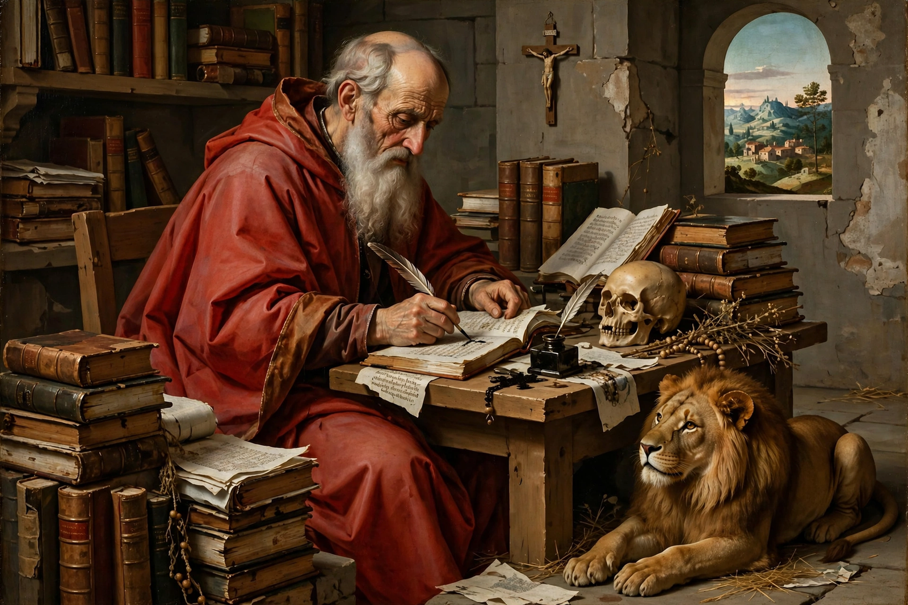

From Wikipedia, the free encyclopedia
| Born | c. 342 AD Stridon, Dalmatia |
|---|---|
| Died | 30 September 420 AD Bethlehem, Judaea |
| Venerated in | Catholic Church, Eastern Orthodox Church, Lutheranism, Anglican Communion |
| Feast | 30 September |
| Major works | Vulgate, commentaries, letters |
Jerome (Latin: Eusebius Sophronius Hieronymus; c. 342 – 30 September 420), also known as Saint Jerome, was a Christian priest, confessor, theologian and historian, famous for translating most of the Bible into Latin — the version known as the Vulgate. He is recognised as a saint and Doctor of the Church.

Jerome in his study, a favourite subject of Renaissance art.
Jerome was born at Stridon, on the border of Dalmatia and Pannonia, and studied grammar and rhetoric in Rome under Donatus, where he was baptised. Drawn to asceticism, he lived as a hermit in the desert of Chalcis in Syria, learned Hebrew and Greek, and was ordained a priest at Antioch. In Constantinople he studied under Gregory of Nazianzus. Back in Rome (382–385) he served as secretary to Pope Damasus I, who commissioned his revision of the Latin Bible, and became spiritual director to a circle of aristocratic Roman women including Paula and her daughter Eustochium.
After Damasus's death Jerome left Rome in 385, travelled to Egypt, and settled in Bethlehem, where Paula founded monasteries. There he spent over three decades translating, writing commentaries, and conducting fierce controversies — against the Origenists, Vigilantius, Jovinian and the Pelagians. He died in Bethlehem in 420.
Jerome's Vulgate became the standard Latin Bible of the Western Church for more than a millennium. His many biblical commentaries, his continuation of Eusebius's Chronicle, the biographical collection De viris illustribus, and some 120 letters — vivid, learned and often caustic — made him the most prolific Latin writer of his age. His famous dream, in which he was beaten before God's tribunal for being "a Ciceronian, not a Christian", dramatizes his lifelong tension between classical literature and Christian asceticism.
Jerome is traditionally depicted as a cardinal in a red hat (an anachronism), as a half-clad hermit in the desert, or as a scholar in his study accompanied by a lion, which legend says he tamed by removing a thorn from its paw. He is the patron saint of translators; his feast day, 30 September, is celebrated as International Translation Day.